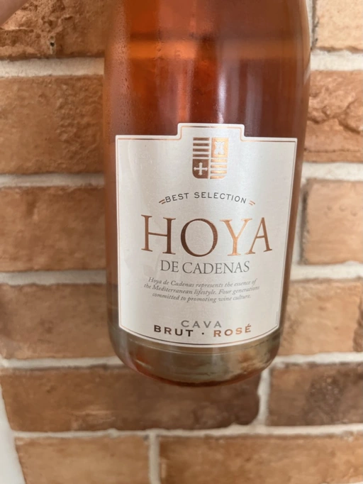

- Type
- Rose Sparkling, Brut
- Producer
- Hoya de Cadenas
- Vintage
- NV
- Location
- Spain, Cava
- Grapes
- Grenache
- Alcohol
- 12
- Sugar
- NA
- Price
- 325 UAH, 228 UAH
- Cellar
- N/A
Ratings
2022-08-28 - 7.00
Basic Rosé Cava with everything you would expect from it. Toast notes interleaved with peach and red berries. Fresh and straightforward palate. For this price? An incredible background wine.